Open Godot_v4.2.2-stable_win64 from
Godot_v4.2.2-stable_win64.exe folder
Click on import
Enter the following path in the dialog box:
/Users/Downloads/ASU-SUCCESS/GameDev/GodotGame/dino_run
and click on Select Current Folder button below.
Click on Import and Edit and then open the project by
click on Dino_run project.
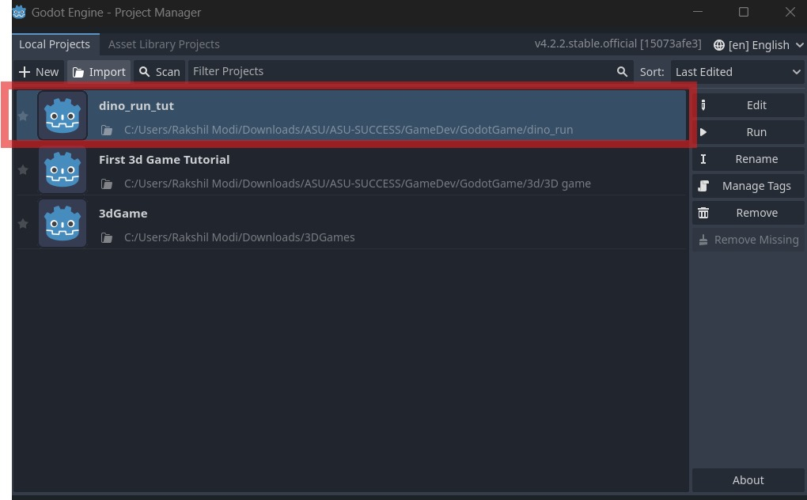
Now the next step is to test and run the game to make sure
everything is working fine. Click on the play button.
Changing Parameters
Now the first thing you will do in this game is to change the
speed
Open main.gd file, to open that click on scenes on the bottom left
corner.
In the scenes folder click on main.gd file.
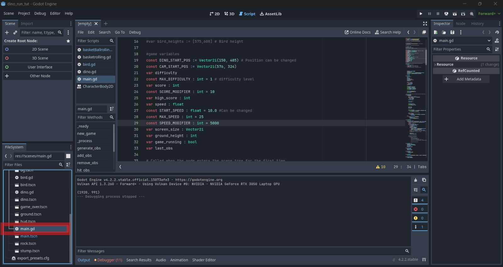
In this file there are 3 variables that you can tinker with
START_SPEED
MAX_SPEED
SPEED_MODIFIER
Try to play around with these to see how it affects the game.
START_SPEED is the speed at which the game starts, MAX_SPEED is
the maximum speed the game can reach and SPEED_MODIFIER is the
speed at which the game speeds up.
Save the file by pressing CTRL + S
Now you will be adding a new obstacle in the game, to do so, go to
line 7 and uncomment it by pressing
CTRL + /.
After doing that add the variable barrel_scene to
obstacle_types variable on line 10.
After adding your obstacle_types should look like this
var obstacle_types :=
[rock_scene,stump_scene,barrel_scene]
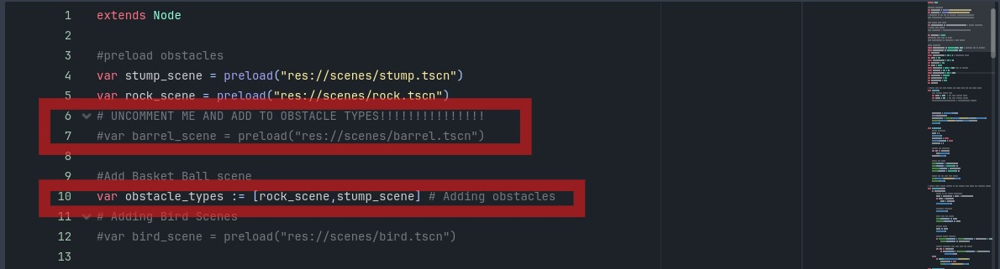
Creating Custom Obstacles
Click on Scenes from the Navigation bar and then click on New
Scene
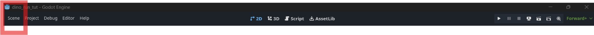
Now Click on other nodes
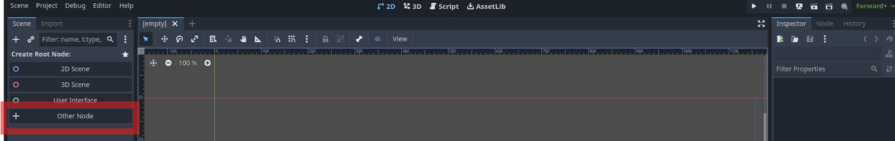
Search for Area in the top dialog box and then click on Area2D
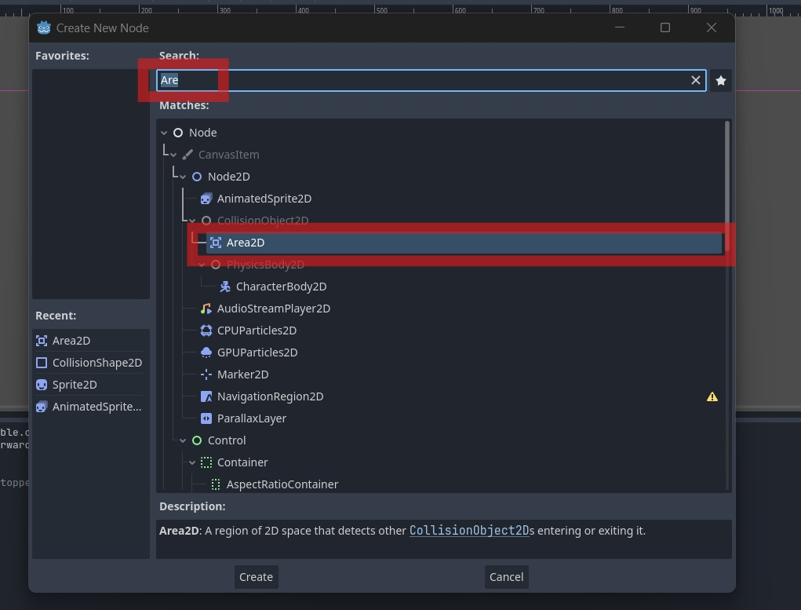
Now on the left pane, right click on Area2D and then click on
Add Child Node.
Type in Sprite in the search box and click on Sprite2D
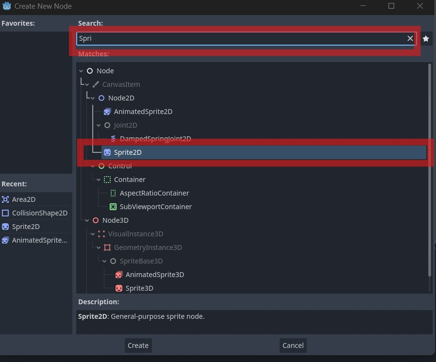
Now on the left pane, right click on Area2D and then click on
Add Child Node.
Type in Collision in the search box and click on CollisionShape2D
If all the steps were done correctly then it should look like this
Now in the bottom left pane, go to
assets -> obstacles -> basket.png
Now click and drag basket.png to Sprite2D panel on the right and
drop it onto the texture pane.
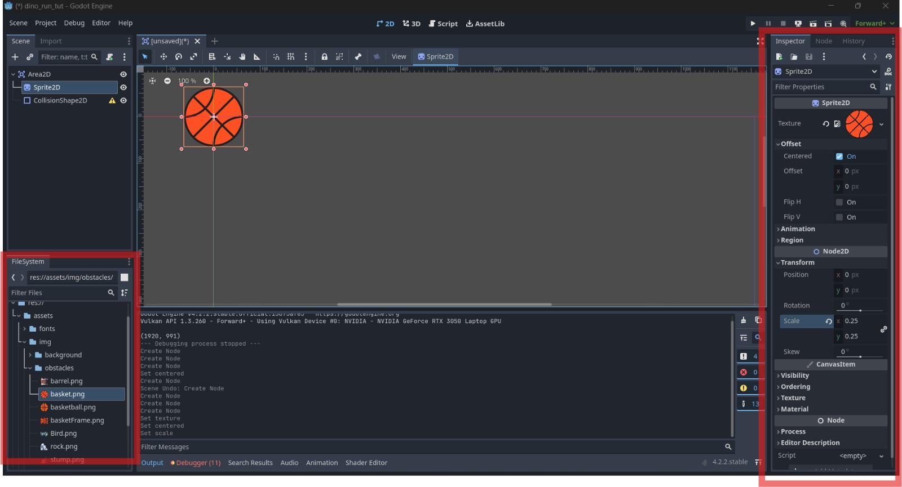
Now change the properties Offset to centered and
Scale to 0.25 as shown in the image above.
Now click on the CollisionShape2D and then click on
the Shape property and then click on the
New CircleShape2D option.
Now click on the CircleShape2D and then change the
Radius to 63.89
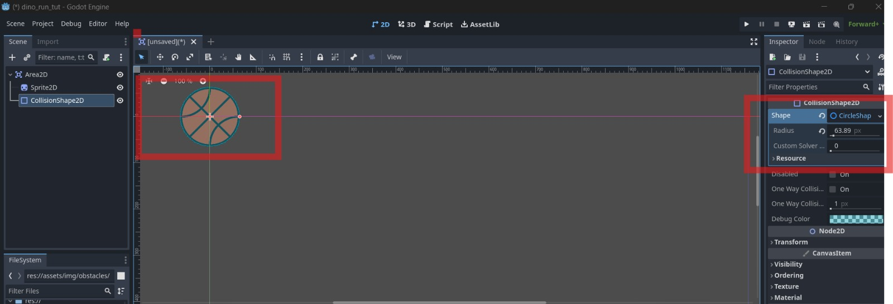
Now press CTRL + S to save the scene and place the
scene in scene folder and give your scene a name as
basketball.tscn
CHALLENGE 1!!!
Adding the created Obstacle to Scene.
Instructions
Your challenge is to add the obstacle in a game scene:
Take a newly created basketball and add to the scene.
Place the basketball as an obstacle in your game scene.
Once you've completed the challenge, see how the basketball adds fun and interaction to your game!
Animating the Bird
Now lets begin to Animate Bird!!
Go to the bird.tscnfrom the Scenes present on the bottom left of the window
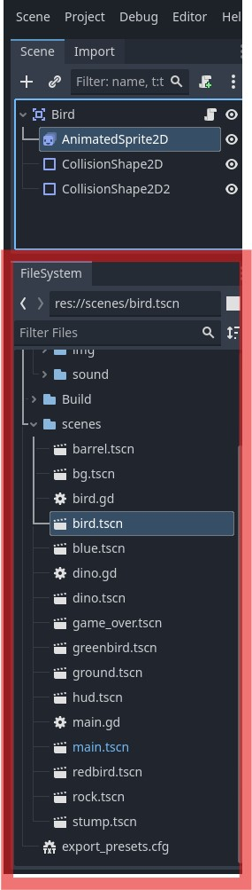
Now click on the right delete button and click on the grid button present on animation window
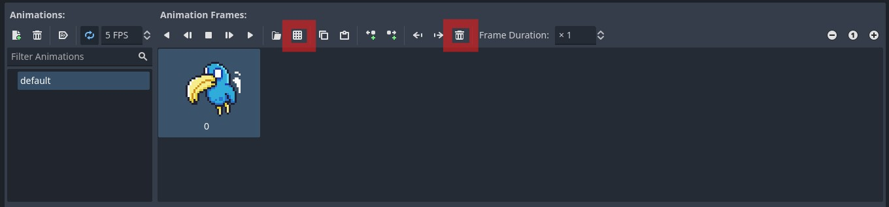
Now go to res://assets/img/obstacles and select bird.png.
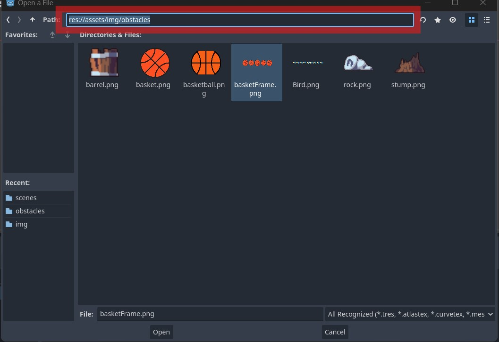
Now in the window make horizontal to 9 and vertical to 1 and then select the first fourbirds.
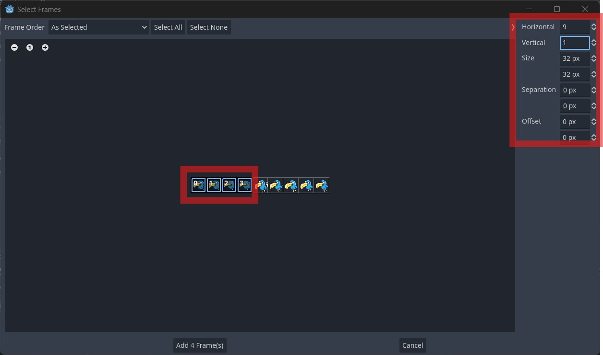
Now Save the scene using Ctrl + S.
Navigate to main.gd
Uncomment line 12 by CTRL + /
Now uncomment line 16. This variable helps control
bird's height
Now uncomment lines starting from line 128 to
line 135. This will add bird to the scene.
Now press CTRL + S to save
CHALLENGE 2!!!
Animate a basketball like rotate inplace and add it to the game scene.
Instructions
Your challenge is to animate a basketball in a game scene:
Rotate the basketball in place at a steady speed.
Place the basketball as an obstacle in your game scene.
For the rotating the basketball use the following script to add to basketball scene:
extends Area2D
# Called when the node enters the scene tree for the first time.
var rotation_speed : float = 2 * PI
func _ready():
# Start the rotation process
set_process(true)
func _process(delta):
# Rotate the basketball
rotation += rotation_speed * delta
Feel free to adjust the rotation_speed variable to change how fast the basketball rotates.
Once you've completed the challenge, see how the animated basketball adds fun and interaction to your game!
Exporting to Web
Click on the Project from the top and then click Export...
Click on Add... besides presets and select Web
Click on download and install present on the bottom of the window.
Then in Preset, click on Web, under web click Export Project
Create a folder and in folder save the file with name of your choice with .html.
Add Server.py file to folder where you added the file.
Go the folder and type cmd in the place surronded by red box in the image and press Enter
In the new window typepython server.py
Web browser will open now and now find your file and double click on it.